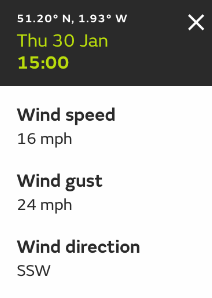

<!DOCTYPE html>
<html lang="en">

<head>
    <title>Test</title>
    <meta charset="utf-8">
    <meta http-equiv="X-UA-Compatible" content="IE=Edge">
    <meta name="viewport" content="width=device-width, initial-scale=1.0, maximum-scale=1.0, user-scalable=no" />
    <link rel="shortcut icon" type="image/x-icon" href="/resources/images/favicon.png" />
    <link rel="stylesheet" href="https://unpkg.com/leaflet@1.5.1/dist/leaflet.css" integrity="sha512-xwE/Az9zrjBIphAcBb3F6JVqxf46+CDLwfLMHloNu6KEQCAWi6HcDUbeOfBIptF7tcCzusKFjFw2yuvEpDL9wQ==" crossorigin=""/>
    <script src="https://unpkg.com/leaflet@1.5.1/dist/leaflet.js" integrity="sha512-GffPMF3RvMeYyc1LWMHtK8EbPv0iNZ8/oTtHPx9/cc2ILxQ+u905qIwdpULaqDkyBKgOaB57QTMg7ztg8Jm2Og==" crossorigin=""></script>

    <link rel="stylesheet" href="https://rsms.me/inter/inter.css">

    <style>
        html,
        body,
        #map {
            background-color: #fff;
            font-family: Inter, Arial, Helvetica, sans-serif;
            margin: 0;
            padding: 0;
            width: 100%;
            height: 100%;
            cursor: pointer;
        }

        /* Leaflet Popup */

        .leaflet-popup-content {
            margin: 0px;
        }

        .leaflet-popup-content-wrapper {
            background: #ffffff;
            border-radius: 0;
            color: #2a2a2a;
            white-space: nowrap;
        }

        .leaflet-popup-tip {
            background: #ffffff;
        }
    </style>

</head>

<body>

    <div id="map"></div>

    <script>

        var map,
            baseLayer,
            content = '';

        map = new L.Map("map", {
            center: new L.LatLng(65, 0),
            zoom: 3,
            maxZoom: 10,
            minZoom: 3,
            maxBounds: L.latLngBounds(L.latLng(-85, -180.0), L.latLng(85.0, 180.0)),
            crs: L.CRS.EPSG3857,
            attributionControl: false
        });

        // Base map layer
        baseLayer = new L.tileLayer("https://betatest.metoffice.gov.uk/weather/maps-and-charts/enthusiast/tileserver/styles/dev-atlas-light-theme-base/{z}/{x}/{y}{r}.png").addTo(map);

        map.on("click", function(event) {

            var dataPopup = L.popup({
                closeButton: false
            })
            .setLatLng(event.latlng)
            .setContent(content)
            .openOn(map);

        });

    </script>

</body>

</html>